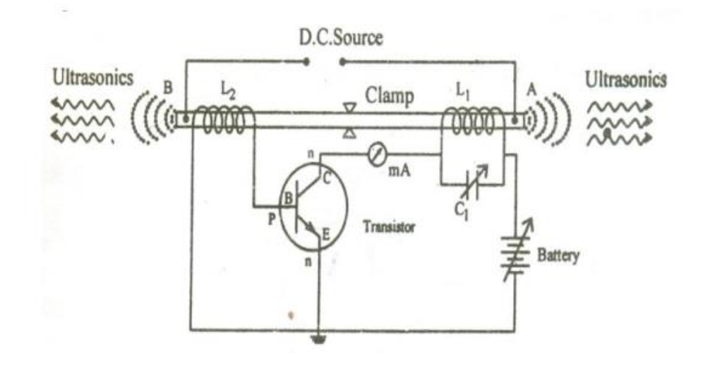
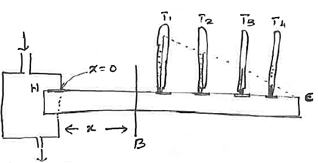

1. Derive an expression for the time period of the torsional pendulum and arrive at the equation of torsional rigidity. Also mention its uses.
(A) Derivation of Time Period
Principle: The torsional pendulum executes Angular Harmonic Motion.
Step 1: Angular Harmonic Motion
Consider a particle (or body) executing angular harmonic motion. At any instant \( t \), let \( \theta \) be the angular displacement measured from the equilibrium position.
The differential equation of angular harmonic motion is given by:
$$ \frac{d^2\theta}{dt^2} + \omega^2\theta = 0 $$
Where \( \omega^2 \) is a constant.
Step 2: Restoring Torque Relation
In a torsional pendulum, the restoring torque \( \tau \) is proportional to the angular displacement \( \theta \):
$$ \tau = -C\theta $$
(Where \( C \) is the Torsional Rigidity or couple per unit twist).
According to Newton's second law for rotation:
$$ \tau = I \frac{d^2\theta}{dt^2} $$
(Where \( I \) is the Moment of Inertia).
Equating the torques:
$$ I \frac{d^2\theta}{dt^2} = -C\theta $$
$$ \frac{d^2\theta}{dt^2} + \frac{C}{I}\theta = 0 $$
Step 3: Comparison and Time Period
Comparing the above equation with the standard angular harmonic equation (\( \frac{d^2\theta}{dt^2} + \omega^2\theta = 0 \)):
$$ \omega^2 = \frac{C}{I} \implies \omega = \sqrt{\frac{C}{I}} $$
The period of oscillation \( T \) is given by:
$$ T = \frac{2\pi}{\omega} $$
Substituting \( \omega \):
$$ T = \frac{2\pi}{\sqrt{C/I}} $$
\( T = 2\pi \sqrt{\frac{I}{C}} \)
(B) Equation of Torsional Rigidity
Rearranging the Time Period formula for \( C \):
Square both sides of the time period equation:
$$ T^2 = 4\pi^2 \frac{I}{C} $$
Solving for \( C \):
\( C = \frac{4\pi^2 I}{T^2} \)
(Note: In terms of material properties, \( C = \frac{\pi G r^4}{2L} \), where \( G \) is rigidity modulus).
(C) Uses
The torsional pendulum is used to determine:
- Moment of Inertia (I): Of irregular bodies by measuring the time period.
- Rigidity Modulus (G): Of the material of the wire, using the relation between \( C \) and \( G \).
2.What is ultrasonics? Explain the magnetostriction method of producing ultrasonic waves.
1. Ultrasonics
Definition: Vibrating bodies produce sound. The human ear is sensitive to sound waves of frequencies ranging from 20 Hz to 20,000 Hz. Sound waves of frequencies greater than 20,000 Hz are called Ultrasonic waves.
Human beings cannot sense this sound. Ultrasonic waves are generated by bats and dolphins and they use the reflection of the waves to find their way.
2. Magnetostriction Generator
Principle: Magnetostriction Effect
Magnetostriction generator is based on the principle of magnetostriction effect. When a ferromagnetic rod like iron or nickel is kept in a magnetic field parallel to its length, the rod expands or contracts producing a change in length. This is known as Magnetostriction effect.

Construction
- The Rod: The generator consists of a nickel rod which is laminated, insulated, and pasted to avoid Eddy current loss. The rod is clamped in the middle.
- Coils: Coils \( L_1 \) and \( L_2 \) are wound on the two ends of the rod.
- Coil \( L_1 \) is connected to the base circuit (feedback loop).
- Coil \( L_2 \) is connected to the collector circuit.
- Tank Circuit: The inductor \( L_2 \) and capacitor \( C_1 \) form the tank circuit.
- Biasing: The battery connected between the emitter and collector provides the necessary biasing.
Working
- When the power supply is switched on, the collector current rises and sets up an alternating current in coil \( L_2 \).
- This alternating current provides an alternating magnetic field along the length of the rod.
- Due to the magnetostriction effect, the rod starts vibrating.
- The longitudinal expansion and contraction of the rod produces an e.m.f in the coil \( L_1 \).
- This e.m.f is applied to the base of the transistor, which in turn increases the amplitude of high frequency oscillations in coil \( L_2 \) due to positive feed-back.
- Resonance condition: When the frequency of vibration of the rod matches the frequency of the tank circuit, ultrasonic waves are produced. This is achieved by adjusting the capacitor \( C_1 \).
Frequency Equation
The frequency of vibration is given by:
$$ f = \frac{1}{2l} \sqrt{\frac{E}{\rho}} $$
Where \( l \) is the length of the rod, \( E \) is Young's modulus, and \( \rho \) is density.
3. Advantages and Drawbacks
Advantages:
- Magnetostriction oscillators are mechanically rugged.
- The construction cost is low.
- They are capable of producing large acoustical power with fairly good efficiency (approx 60%).
Drawbacks:
- It can produce frequencies up to 3 MHz only.
- The frequency of oscillations depends on temperature.
3.Explain with a neat diagram, principle, construction, working and application of piezoelectric method to produce ultrasonics.
1. Principle: Inverse Piezoelectric Effect
The Piezoelectric generator is based on the Inverse Piezoelectric Effect.
- Piezoelectric Effect: When mechanical stress is applied to certain crystals (like Quartz), electric charges appear on opposite faces.
- Inverse Effect: Conversely, when an alternating electric field is applied to the opposite faces of the crystal, it undergoes mechanical deformation (expansion and contraction). This principle is used to generate ultrasonic waves.
2. Construction
Components (Based on Diagram)
- Crystal Unit: A slice of quartz crystal (Q) is placed between two metal plates A and B, forming a parallel plate capacitor.
- Oscillator Circuit: The circuit uses a transistor-based oscillator.
- The coil \( L_2 \) and variable capacitor \( C \) form the tank circuit connected to the collector. This determines the frequency of oscillation.
- The coil \( L_1 \) is connected to the base and provides positive feedback (mutual induction) to sustain oscillations.
- Coupling: The oscillator coils (\( L_1, L_2 \)) are inductively coupled to a secondary coil \( L \) via a transformer core. This coil \( L \) is connected to the crystal plates A and B.
3. Working
- Generation of Oscillations: When the DC supply (Battery) is switched on, the oscillator produces high-frequency alternating currents in the tank circuit (\( L_2, C \)).
- Induction: This alternating current induces a high-frequency alternating e.m.f. (voltage) in the secondary coil \( L \) due to transformer action.
- Crystal Vibration: This alternating voltage is applied across the plates A and B. Due to the inverse piezoelectric effect, the crystal \( Q \) expands and contracts (vibrates) rapidly.
- Resonance: The variable capacitor \( C \) is adjusted to tune the frequency of the oscillator. When the frequency of the oscillator matches the natural frequency of the crystal, resonance occurs.
- Ultrasonic Emission: At resonance, the crystal vibrates with maximum amplitude, and powerful ultrasonic waves are emitted into the surrounding air or medium.
Frequency Formula
The natural frequency of the crystal is given by:
$$ f = \frac{k}{t} \sqrt{\frac{E}{\rho}} $$
Where \( t \) is thickness, \( E \) is Young's modulus, and \( \rho \) is density.
4. Applications
- Ultrasonic Welding (Cold Welding): Used to weld materials at room temperature. Ultrasonic vibrations are sent between surfaces to disrupt oxide layers and form a bond without melting the metal.
- Ultrasonic Soldering: Enables soldering of metals like aluminum without flux. The vibrations remove the oxide layer (cavitation), allowing the solder to bond directly to the metal.
- Ultrasonic Cleaning: Highly effective for removing micron-sized particles from hard surfaces. It uses cavitation bubbles in a liquid solvent to dislodge contaminants from delicate instruments.
5. Merits and Demerits
Advantages:
- Can generate very high frequencies (up to 500 MHz).
- High output power and efficiency.
- Frequency is stable and independent of temperature/humidity.
Disadvantages:
- Quartz crystals are expensive.
- Cutting and shaping the crystal is complex.
4.Describe Forbe’s method to determine thermal conductivity of metals with relevant theory and experiment.
1. Introduction and Principle
Forbe's method is used to determine the absolute thermal conductivity of metals.
The principle relies on the steady-state condition where the heat conducted across a specific cross-section of a heated rod is equal to the total heat lost by radiation from the rest of the rod beyond that section.
2. Construction and Apparatus
Setup
- Metal Rod: It consists of a long rod of uniform area of cross-section.
- Steam Chamber: One end of the rod is enclosed by a steam chamber (H) to heat it, while the other end is left free.
- Thermometers: Thermometers are inserted into provisions made in the rod at equal distances to measure the temperature gradient.

3. Theory and Calculation
Step 1: Heat Conduction
Consider a point \( B \) at a distance \( x \) from the hot end. The rod is heated until a steady state is reached. The amount of heat flowing per second across section \( B \) is given by:
$$ Q_1 = -KA \left(\frac{d\theta}{dx}\right) $$
(Note: The source text denotes this as \( KA(d\theta/dx) \)).
Where:
- \( K \) = Coefficient of thermal conductivity
- \( A \) = Area of cross-section
- \( \frac{d\theta}{dx} \) = Temperature gradient at \( B \)
Step 2: Heat Loss by Radiation
The heat conducted at \( B \) is lost by radiation from the portion of the rod between \( B \) and the end \( C \).
The amount of heat lost per second by radiation beyond \( B \) is:
$$ Q_2 = \int_{B}^{C} (m \cdot s) \frac{d\theta}{dt} $$
Since Mass \( m = \text{Volume} \times \text{Density} = (A \cdot dx) \cdot \rho \), the equation becomes:
$$ Q_2 = \int_{B}^{C} A \cdot dx \cdot s \cdot \rho \left( \frac{d\theta}{dt} \right) $$
Step 3: Steady State Equation
At steady state, the heat conducted at \( B \) equals the heat lost by radiation beyond \( B \). Equating \( Q_1 \) and \( Q_2 \):
$$ KA \left(\frac{d\theta}{dx}\right) = \int_{B}^{C} A \cdot dx \cdot s \cdot \rho \left(\frac{d\theta}{dt}\right) $$
Canceling \( A \) and rearranging for \( K \):
$$ K = \frac{\rho s \int_{B}^{C} \frac{d\theta}{dt} dx}{\left(\frac{d\theta}{dx}\right)_B} $$
4. Experimental Procedure
The experiment is performed in two parts to find the values for the formula above.
Part A: Static Experiment (To find \( \frac{d\theta}{dx} \))
- The rod is heated by the steam chamber until the thermometers reach a steady state.
- The temperatures \( \theta_1, \theta_2, \theta_3 \dots \) are noted corresponding to distances \( x_1, x_2, x_3 \dots \) from the hot end.
- A graph is plotted with Distance (\( x \)) along the X-axis and Temperature (\( \theta \)) along the Y-axis.
- A tangent is drawn to the curve at the point corresponding to section \( B \). The slope of this tangent gives \( \frac{d\theta}{dx} \).
- $$ \left(\frac{d\theta}{dx}\right) = \tan \alpha = \frac{BD}{BE} $$
Part B: Dynamic Experiment (To find \( \frac{d\theta}{dt} \))
- A sample piece of the original rod (same radius/material) is heated to the temperature of the hot end.
- It is suspended in the open atmosphere and allowed to cool. A thermometer records the temperature as it falls.
- A graph is plotted with Time along the X-axis and Temperature along the Y-axis.
- Tangents are drawn at temperatures corresponding to the steady temperatures found in the static experiment (at \( T_1, T_2 \dots \)) to find the rate of cooling \( \frac{d\theta}{dt} \) for each point.
Final Calculation (Integration)
- With the data obtained, a third curve is plotted with Distance (\( x \)) along the X-axis and Rate of cooling (\( \frac{d\theta}{dt} \)) along the Y-axis.
- The area under the shaded portion of this curve from point \( B \) to the end \( C \) corresponds to the integral value: \( \int_{B}^{C} \frac{d\theta}{dt} dx \).
- Substituting the values of density (\( \rho \)), specific heat (\( s \)), the area from the graph, and the slope \( \frac{d\theta}{dx} \) into the formula gives the value of \( K \).
5. Limitations
- The experiment is tedious as it involves drawing three different graphs.
- It takes a long time to complete the experiment.
5.Describe the process of non destructive testing of material, using ultrasonic waves by pulse echo techniques( A-scan, B -scan and TM- Mode Scanning)
1. Pulse Echo System
The main components of a pulse echo system are a transmitter, time-base generator, receiver, swept-gain generator, and cathode ray oscilloscope (CRO).
Working Principle
- Transmission: The transmitter gives a sufficient amount of energy to the transducer, which emits a short burst of ultrasound waves.
- Coupling: The transducer is kept in close contact with the skin (or material). A good couplant is used between the skin and the transducer to provide good coupling and avoid excess reflection at the air-solid boundary.
- Reflection: The ultrasound generated is passed into the target and gets reflected back from the target.
- Reception: The same transducer (or a separate one) receives the reflected signal. This signal is amplified and applied to the y-plates of the CRO.
2. A - Scan (Amplitude Scan)
A-scan is the simplest form of display and the prime factor in obtaining all other scans. It gives only a one-dimensional image of the object.
Display Mechanism
- X-axis: Represents the time taken by the pulse to reach the reflecting surface and return back (distance).
- Y-axis: Represents the amplitude of the echoes. The size of the vertical displacement measures the echo amplitude.
Operation
The transducer is fixed at one position. Any movement in the echo train is the result of movement of the interface target.
Example: The echo encephalogram.
3. B - Scan (Brightness Scan)
In B-scan display, brightness is related to the echo amplitude. This display gives a cross-sectional view of the test object and shows the position, orientation, and depth of defects.
Display Mechanism
- Brightness: The echo signals are not applied to the y-plates. Instead, they control the brightness of the spot on the screen.
- X-axis: Represents the position of the transducer.
- Y-axis: Represents the lapsed time.
Applications
This method requires a skilled operator. It is widely used in diagnostics to detect pregnancy, multiple foetuses, the age of the foetus, and the position of the placenta.
4. T-M Scan (Time-Motion) or C-Scan
In the T-M mode or time-position scan, the movement of echo-generating tissues is displayed as a function of time.
Display Mechanism
- A low-velocity time base generator is applied across the y-plates of the CRO to modify the static B-scan system.
- The B-scan moves vertically at a constant low velocity (sweep time is approx. 3 seconds).
- Under this condition, if the reflecting interface spot moves, a horizontal deflection in the vertical line pattern is obtained.
Applications
This type of display is useful in obtaining pulsating structures such as the heart and the movement of the mitral valve related to various periods of the heart cycle.